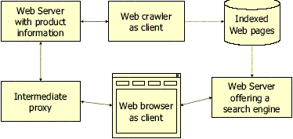

Nicht verteilte Systeme Server zentrierte Systeme Klienten-zentrierte Client/Server Systeme Föderierte Systeme Peer to Peer verteilte, kollaborative Systeme Peer to Peer |
Skala: Zeit, Potential, Komplexität und Anforderungen
| Verteilte Systeme und Middleware |
|
| 1. Beschreiben Sie die Entwicklung verteilter Systeme von einer Zentralisierung bis zu P2Peer. | ||||
Skala: Zeit, Potential, Komplexität und Anforderungen |
||||
| 2. Nennen Sie fünf charakteristische Eigenschaften verteilter Systeme | ||
|
|
||
| 3. Nennen Sie drei Vorteile verteilter Systeme | ||
| |
||
| 4. Nennen Sie drei Nachteile verteilter Systeme | ||
| |
||
| 5. Was sind Transparenzen und was macht Middleware dabei? | ||
Transparenz ist die Maskierung von Details und unterschiedlichen Mechanismen von Anwendungen bei der Verteilung Middleware stellt Ortstransparenz her |
||
| 6. Was ist Ortstransparenz? | ||
| Maskiert die Nutzung von Ortinformationen beim Auffinden
anderer Objekte (werden durch Middleware-Dienste realisiert, die den Methodenaufruf zum richtigen Ort transportieren ohne dass der Nutzer das tun muss) |
||
| 7. Wieso ist das Web ein verteiltes System? | ||
| Jede Komponente kann auf anderem Rechner sein:  |
||